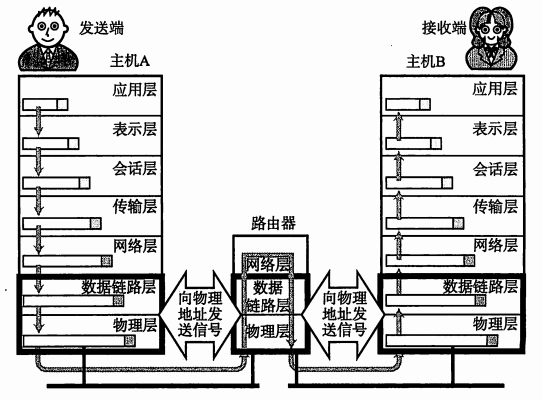

协议分层
IOS提出OSI参考模型，帮助不同类型的主机实现数据传输，这一模型将通信协议中必要的功能分成了7层，这一模型中，每个分层都接收由它下一层所提供的特定服务，并为上一层提供服务，上下层之间交互所遵守的约定叫”接口“，同一层之间交互所遵守的约定叫”协议“，分层可以将每一个独立使用，即使系统中某些分层变化，也不影响整个系统，OSI参考模型通过每一层协议定义了每一层的作用，这7层自上向下分别是
应用层：针对特定应用的协议，文件传输、电子邮件、远程登录等协议
表示层：设备固有数据格式和网络标准数据格式的转换
会话层：通信管理，负责建立和断开通信连接，以及数据的分割等数据传输相关的管理
传输层：管理两个节点之间的数据传输（端与端之间的数据交流）
网络层：地址管理与路由选择，路由器工作在网路层
数据链路层：负责物理层面互连节点之间的通信和识别数据帧，交换机工作在数据链路层
物理层：负责0、1比特流与电压高低、关的闪灭之间的互换、界定连接器和网线规格，集线器工作在物理层
对于一台主机，它的操作系统内核实现了从传输层到物理层的内容
对于一台路由器，它实现了从网络层到物理层
对于一台交换机，它实现了从数据链路层到物理层
对于集线器，它只实现了物理层
但是并不绝对，很多交换机也实现了网络层的转发，很多路由器也实现了部分传输层的内容（比如端口转发）
由于OSI7层模型复杂又不实用，所以我们通常用TCP/IP四层模型，将应用层、表示层、会话层统称应用层，由于物理层考虑比较少，所以TCP/IP四层模型包括：应用层、传输层、网络层、链路层
电路交换与分组交换
电路交换中，交换机主要负责数据的中转处理。计算机首先被连接到交换机上，而交换机与交换机之间则由众多通信线路再继续连接，因此计算机之间发送数据时，需要通过交换机与目标主机建立通信电路。由于一台计算机在收发信息时会独占整个电路，如果并发用户数超过交换机之间的通信线路数，就意味着通信无法实现。
为此，新的方法出现，让连接到通信电路的计算机将所要发送的数据分成多个数据包，在分组的首部写入发送端和接收端的地址，按照一定顺序排列后分别发送给路由器，路由器收到这个数据后缓存到自己的缓冲区队列中，然后转发给目标计算机，计算机与路由器，路由器与路由器之间通常只有一条共享线路，所以分组交换中通信速度和网络拥堵的情况有关，路由器的缓存饱和或溢出时，也可能发生分组数据丢失的情况
MAC地址
MAC地址用来识别数据链路层中相连的节点，长度为48位，即6个字节，一般用16进制数字加上冒号的形式来表示，在网卡出厂时就确定了，不能修改，mac地址通常是唯一的，人们可以通过制造商识别号、制造商内部产品编号以及产品通用编号确保MAC地址的唯一性。（虚拟机中的mac地址不是真实的mac地址，可能会冲突，也有些网卡支持用户配置mac地址）虽然MAC地址中的制造商识别、产品编号、通用编号等信息在某种程度上有一定层次性，但是对于寻找地址并没有起到任何作用，所以不能算有层次的地址，虽然MAC地址是真正负责最终通信的地址，但是在实际寻址过程中，IP地址却必不可少
IP地址
MAC地址描述的是路途上的每一个区间的起点和终点。IP地址描述的是路途总体的起点和终点。
IP地址是IP协议中，用来标识网络中的唯一一台主机的地址。IP协议有两个版本IPv4，IPv6。IPv4中，IP地址是一个4字节的32位的整数(uint32_t)。IPv6中，IP地址是一个16字节的128位的整数(uint8_t ip[16])
两台主机通过网络来互相通信来发送数据时，就需要知道对方的IP地址，找到对方的主机，才能将数据发给它。所以在发送数据时，该数据包中还应包含两个IP地址，一个是目的IP，用于指明数据是发给谁的。一个是源IP，用于告诉对方该数据是哪台主机发送的，以便向其回发消息
当我们通过网络将数据发送给目的IP指定的主机时，目的主机要调用哪个进程对该数据进行处理，所以，此时还需要知道主机中处理数据的进程号。因此，需要引入端口号
端口号
端口号是一个2字节16位的整数，用来标识一个主机中唯一的一个进程，IP地址 + 端口号能够标识网络上的某一台主机的某一个进程，当源主机通过网络将数据发送给目的主机后，调用该端口号指定的进程来对数据进行处理，在网络通信中，每条数据都包含一个五元组（源ip地址，源端口，目的ip地址，目的端口，协议类型）可以通过netstat -n查看
一个端口号只能绑定一个进程
一个进程可以绑定多个端口号，因为一个进程可以创建多个socket
0 - 1023: 知名端口号，HTTP，FTP，SSH等这些广为使用的应用层协议，他们的端口号都是固定的，命令cat /etc/services可查看
1024 - 65535: 操作系统动态分配的端口号，客户端程序的端口号，就是由操作系统从这个范围分配的
网络字节序
网络通信中源主机要通过内存将数据先发给源主机的网卡，然后发送到网络中，目的主机将网络中的数据项接收到目的主机的网卡上，再传入到目的主机的内存中，然后通过CPU对数据进行处理
发送主机将发送缓冲区的数据按低地址到高地址的顺序发出，接收主机从网络中也是按低地址到高地址的顺序将数据接收到接受缓冲区中
而数据在内存中的存储有大小端之分。如果在源主机的内存为小端，而目的主机以大端的形式来接受数据时，此时，就会导致数据错误
TCP/IP协议规定，网络数据流均采用大端，当发送消息时，先将数据放到发送缓冲区中，再将数据转换为大端字节序后发送，同理接收数据时，先将数据接收到接收缓冲区中，然后再将数据转换为主机字节序后读取
主机的存储模式和cpu的架构有关，我们常用的X86架构是小端模式
可以通过下面两种方法判断主机字节序
1 | // 方法一 |
网络字节序列与主机字节序列转换可以通过以下接口来实现：
1 | uint32_t htonl(uint32_t hostlong); |
如果主机是小端字节序，这些函数将参数做相应的大小端转换然后返回
如果主机是大端字节序，这些函数不做转换，将参数原封不动地返回
传输流程

不同的协议层对数据包有不同的称谓，在传输层叫做段，在网络层叫做数据报，在链路层叫做帧，应用层数据通过协议栈发到网络上时，每层协议都要加上一个数据首部，称为封装，首部信息中包含了一些类似于首部有多长，载荷有多长，上层协议是什么等信息，数据封装成帧后发到传输介质上，到达目的主机后每层协议再剥掉相应的首部，根据首部中的上层协议字段将数据交给对应的上层协议处理